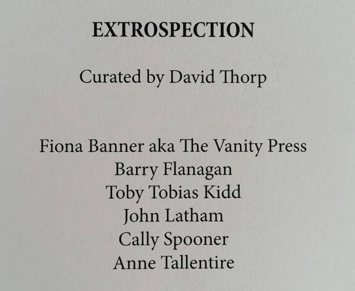
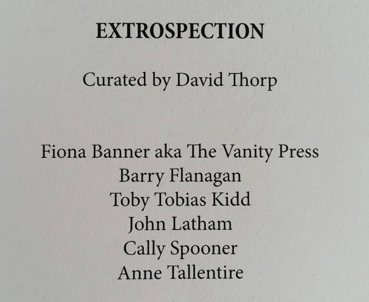

The Blossom
2020
 

The Blossom is a single-channel video work structured as a dialogue between voices from different historical moments, reflecting on the meaning of a house and a home. Through spoken exchange, the work considers what it means to use, inhabit, own, and exist within space, and how these conditions are shaped by time and by cohabitation with others.
Presented as part of EXTROSPECTION, curated by David Thorp at Pi Artworks during Frieze London, the work situates contemporary concerns within a lineage of conceptual practice, foregrounding language, temporality, and the social structures embedded in everyday environments.
Video excerpt from The Blossom, Pi Artworks, curated by David Thorp (2023). Sound on. Full video available on request.
Image 1: Artwork documentation installed at Pi Artworks
Image 2: Video still
Image 3: First page from exhibition book